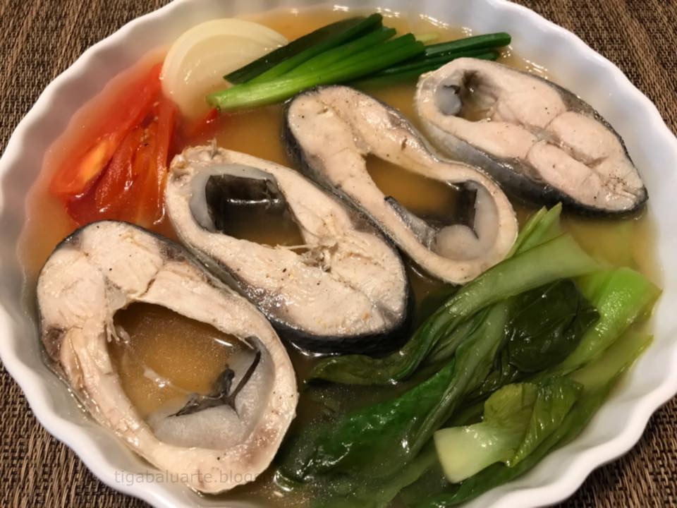

Country Origin of the food: Philippines
History of the food: Sinigang is a dish originated in the Philippines. Typically, it is composed of fish, meat, vegetables, tomatoes and tamarind flavoring. The reason why it is called “sinigang” is that it was a translation to the English word, “stew” which is true because of its method of cooking.
Ingredients of the food:Vegetable Oil,Bangus,Toasted Garlic,Ginger,Onion,Tomato,Finger Chili,Water,Radish,Okra,Sitaw,Patis,Kangkong
How to cook the food:
Step1
Heat oil in a large pan. Season bangus with MAGGI® MAGIC SARAP®. Pan fry bangus until golden brown. Transfer into a cooling rack to drain excess oil. Set aside.
Step2
Combine garlic, ginger, onion, tomato, finger chili and water in a pot. Bring to a boil and simmer while covered for 10 minutes.
Step3
Add radish, okra and sitaw with 2-minute intervals.
Step4
Pour MAGGI® MAGIC SINIGANG® Original Sampalok Mix and fish sauce. Add fried bangus and simmer for 2 minutes.
Step5
Stir in kangkong. Transfer into a serving bowl and serve immediately.